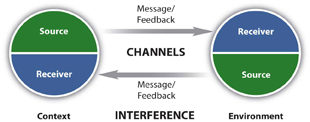

Many theories have been proposed to describe, predict, and understand the behaviors and phenomena of which communication consists. When it comes to communicating in business, we are often less interested in theory than in making sure our communications generate the desired results. But in order to achieve results, it can be valuable to understand what communication is and how it works.
The root of the word “communication” in Latin is communicare, which means to share, or to make common.Weekley, E. (1967). An etymological dictionary of modern English (Vol. 1, p. 338). New York, NY: Dover Publications. CommunicationThe process of understanding and sharing meaning. is defined as the process of understanding and sharing meaning.Pearson, J., & Nelson, P. (2000). An introduction to human communication: Understanding and sharing (p. 6). Boston, MA: McGraw-Hill.
At the center of our study of communication is the relationship that involves interaction between participants. This definition serves us well with its emphasis on the process, which we’ll examine in depth across this text, of coming to understand and share another’s point of view effectively.
The first key word in this definition is processA dynamic activity that is hard to describe because it changes.. A process is a dynamic activity that is hard to describe because it changes.Pearson, J., & Nelson, P. (2000). An introduction to human communication: Understanding and sharing. Boston, MA: McGraw-Hill. Imagine you are alone in your kitchen thinking. Someone you know (say, your mother) enters the kitchen and you talk briefly. What has changed? Now, imagine that your mother is joined by someone else, someone you haven’t met before—and this stranger listens intently as you speak, almost as if you were giving a speech. What has changed? Your perspective might change, and you might watch your words more closely. The feedback or response from your mother and the stranger (who are, in essence, your audience) may cause you to reevaluate what you are saying. When we interact, all these factors—and many more—influence the process of communication.
The second key word is understandingTo perceive, to interpret, and to relate our perception and interpretation to what we already know.: “To understand is to perceive, to interpret, and to relate our perception and interpretation to what we already know.”McLean, S. (2003). The basics of speech communication. Boston, MA: Allyn & Bacon. If a friend tells you a story about falling off a bike, what image comes to mind? Now your friend points out the window and you see a motorcycle lying on the ground. Understanding the words and the concepts or objects they refer to is an important part of the communication process.
Next comes the word sharingDoing something together with one or more other people.. Sharing means doing something together with one or more people. You may share a joint activity, as when you share in compiling a report; or you may benefit jointly from a resource, as when you and several coworkers share a pizza. In communication, sharing occurs when you convey thoughts, feelings, ideas, or insights to others. You can also share with yourself (a process called intrapersonal communication) when you bring ideas to consciousness, ponder how you feel about something, or figure out the solution to a problem and have a classic “Aha!” moment when something becomes clear.
Finally, meaningWhat we share through communication. is what we share through communication. The word “bike” represents both a bicycle and a short name for a motorcycle. By looking at the context the word is used in and by asking questions, we can discover the shared meaning of the word and understand the message.
In order to better understand the communication process, we can break it down into a series of eight essential components:
Each of these eight components serves an integral function in the overall process. Let’s explore them one by one.
The sourcePerson who imagines, creates, and sends the message. imagines, creates, and sends the message. In a public speaking situation, the source is the person giving the speech. He or she conveys the message by sharing new information with the audience. The speaker also conveys a message through his or her tone of voice, body language, and choice of clothing. The speaker begins by first determining the message—what to say and how to say it. The second step involves encoding the message by choosing just the right order or the perfect words to convey the intended meaning. The third step is to present or send the information to the receiver or audience. Finally, by watching for the audience’s reaction, the source perceives how well they received the message and responds with clarification or supporting information.
“The messageThe stimulus or meaning produced by the source for the receiver or audience. is the stimulus or meaning produced by the source for the receiver or audience.”McLean, S. (2005). The basics of interpersonal communication (p. 10). Boston, MA: Allyn & Bacon. When you plan to give a speech or write a report, your message may seem to be only the words you choose that will convey your meaning. But that is just the beginning. The words are brought together with grammar and organization. You may choose to save your most important point for last. The message also consists of the way you say it—in a speech, with your tone of voice, your body language, and your appearance—and in a report, with your writing style, punctuation, and the headings and formatting you choose. In addition, part of the message may be the environment or context you present it in and the noise that might make your message hard to hear or see.
Imagine, for example, that you are addressing a large audience of sales reps and are aware there is a World Series game tonight. Your audience might have a hard time settling down, but you may choose to open with, “I understand there is an important game tonight.” In this way, by expressing verbally something that most people in your audience are aware of and interested in, you might grasp and focus their attention.
“The channelThe way in which a message or messages travel between source and receiver. is the way in which a message or messages travel between source and receiver.”McLean, S. (2005). The basics of interpersonal communication (p. 10). Boston, MA: Allyn & Bacon. For example, think of your television. How many channels do you have on your television? Each channel takes up some space, even in a digital world, in the cable or in the signal that brings the message of each channel to your home. Television combines an audio signal you hear with a visual signal you see. Together they convey the message to the receiver or audience. Turn off the volume on your television. Can you still understand what is happening? Many times you can, because the body language conveys part of the message of the show. Now turn up the volume but turn around so that you cannot see the television. You can still hear the dialogue and follow the story line.
Similarly, when you speak or write, you are using a channel to convey your message. Spoken channels include face-to-face conversations, speeches, telephone conversations and voice mail messages, radio, public address systems, and voice over Internet protocol (VoIP). Written channels include letters, memorandums, purchase orders, invoices, newspaper and magazine articles, blogs, e-mail, text messages, tweets, and so forth.
“The receiverReceives the message from the source, analyzing and interpreting the message in ways both intended and unintended by the source. receives the message from the source, analyzing and interpreting the message in ways both intended and unintended by the source.”McLean, S. (2005). The basics of interpersonal communication (p. 10). Boston, MA: Allyn & Bacon. To better understand this component, think of a receiver on a football team. The quarterback throws the football (message) to a receiver, who must see and interpret where to catch the ball. The quarterback may intend for the receiver to “catch” his message in one way, but the receiver may see things differently and miss the football (the intended meaning) altogether.
As a receiver you listen, see, touch, smell, and/or taste to receive a message. Your audience “sizes you up,” much as you might check them out long before you take the stage or open your mouth. The nonverbal responses of your listeners can serve as clues on how to adjust your opening. By imagining yourself in their place, you anticipate what you would look for if you were them. Just as a quarterback plans where the receiver will be in order to place the ball correctly, you too can recognize the interaction between source and receiver in a business communication context. All of this happens at the same time, illustrating why and how communication is always changing.
When you respond to the source, intentionally or unintentionally, you are giving feedback. FeedbackThe verbal and/or nonverbal response to a message. is composed of messages the receiver sends back to the source. Verbal or nonverbal, all these feedback signals allow the source to see how well, how accurately (or how poorly and inaccurately) the message was received. Feedback also provides an opportunity for the receiver or audience to ask for clarification, to agree or disagree, or to indicate that the source could make the message more interesting. As the amount of feedback increases, the accuracy of communication also increases.Leavitt, H., & Mueller, R. (1951). Some effects of feedback on communication. Human Relations, 4, 401–410.
For example, suppose you are a sales manager participating in a conference call with four sales reps. As the source, you want to tell the reps to take advantage of the fact that it is World Series season to close sales on baseball-related sports gear. You state your message, but you hear no replies from your listeners. You might assume that this means they understood and agreed with you, but later in the month you might be disappointed to find that very few sales were made. If you followed up your message with a request for feedback (“Does this make sense? Do any of you have any questions?”) you might have an opportunity to clarify your message, and to find out whether any of the sales reps believed your suggestion would not work with their customers.
“The environmentInvolves the physical and psychological aspects of the communication context. is the atmosphere, physical and psychological, where you send and receive messages.”McLean, S. (2005). The basics of interpersonal communication (p. 11). Boston, MA: Allyn & Bacon. The environment can include the tables, chairs, lighting, and sound equipment that are in the room. The room itself is an example of the environment. The environment can also include factors like formal dress, that may indicate whether a discussion is open and caring or more professional and formal. People may be more likely to have an intimate conversation when they are physically close to each other, and less likely when they can only see each other from across the room. In that case, they may text each other, itself an intimate form of communication. The choice to text is influenced by the environment. As a speaker, your environment will impact and play a role in your speech. It’s always a good idea to go check out where you’ll be speaking before the day of the actual presentation.
“The contextInvolves the setting, scene, and expectations of the individuals involved. of the communication interaction involves the setting, scene, and expectations of the individuals involved.”McLean, S. (2005). The basics of interpersonal communication (p.11). Boston, MA: Allyn & Bacon. A professional communication context may involve business suits (environmental cues) that directly or indirectly influence expectations of language and behavior among the participants.
A presentation or discussion does not take place as an isolated event. When you came to class, you came from somewhere. So did the person seated next to you, as did the instructor. The degree to which the environment is formal or informal depends on the contextual expectations for communication held by the participants. The person sitting next to you may be used to informal communication with instructors, but this particular instructor may be used to verbal and nonverbal displays of respect in the academic environment. You may be used to formal interactions with instructors as well, and find your classmate’s question of “Hey Teacher, do we have homework today?” as rude and inconsiderate when they see it as normal. The nonverbal response from the instructor will certainly give you a clue about how they perceive the interaction, both the word choices and how they were said.
Context is all about what people expect from each other, and we often create those expectations out of environmental cues. Traditional gatherings like weddings or quinceañeras are often formal events. There is a time for quiet social greetings, a time for silence as the bride walks down the aisle, or the father may have the first dance with his daughter as she is transformed from a girl to womanhood in the eyes of her community. In either celebration there may come a time for rambunctious celebration and dancing. You may be called upon to give a toast, and the wedding or quinceañera context will influence your presentation, timing, and effectiveness.
In a business meeting, who speaks first? That probably has some relation to the position and role each person has outside the meeting. Context plays a very important role in communication, particularly across cultures.
Interference, also called noise, can come from any source. “InterferenceAnything that blocks or changes the source’s intended meaning of the message. is anything that blocks or changes the source’s intended meaning of the message.”McLean, S. (2005). The basics of interpersonal communication (p. 11). Boston, MA: Allyn & Bacon. For example, if you drove a car to work or school, chances are you were surrounded by noise. Car horns, billboards, or perhaps the radio in your car interrupted your thoughts, or your conversation with a passenger.
Psychological noise is what happens when your thoughts occupy your attention while you are hearing, or reading, a message. Imagine that it is 4:45 p.m. and your boss, who is at a meeting in another city, e-mails you asking for last month’s sales figures, an analysis of current sales projections, and the sales figures from the same month for the past five years. You may open the e-mail, start to read, and think, “Great—no problem—I have those figures and that analysis right here in my computer.” You fire off a reply with last month’s sales figures and the current projections attached. Then, at five o’clock, you turn off your computer and go home. The next morning, your boss calls on the phone to tell you he was inconvenienced because you neglected to include the sales figures from the previous years. What was the problem? Interference: by thinking about how you wanted to respond to your boss’s message, you prevented yourself from reading attentively enough to understand the whole message.
Interference can come from other sources, too. Perhaps you are hungry, and your attention to your current situation interferes with your ability to listen. Maybe the office is hot and stuffy. If you were a member of an audience listening to an executive speech, how could this impact your ability to listen and participate?
Noise interferes with normal encoding and decoding of the message carried by the channel between source and receiver. Not all noise is bad, but noise interferes with the communication process. For example, your cell phone ringtone may be a welcome noise to you, but it may interrupt the communication process in class and bother your classmates.
Researchers have observed that when communication takes place, the source and the receiver may send messages at the same time, often overlapping. You, as the speaker, will often play both roles, as source and receiver. You’ll focus on the communication and the reception of your messages to the audience. The audience will respond in the form of feedback that will give you important clues. While there are many models of communication, here we will focus on two that offer perspectives and lessons for business communicators.
Rather than looking at the source sending a message and someone receiving it as two distinct acts, researchers often view communication as a transactionalModel of communication in which actions happen at the same time. process (Figure 1.3 "Transactional Model of Communication"), with actions often happening at the same time. The distinction between source and receiver is blurred in conversational turn-taking, for example, where both participants play both roles simultaneously.
Figure 1.3 Transactional Model of Communication
Researchers have also examined the idea that we all construct our own interpretations of the message. As the State Department quote at the beginning of this chapter indicates, what I said and what you heard may be different. In the constructivistModel of communication focusing on the negotiated meaning, or common ground, when trying to describe communication. model (Figure 1.4 "Constructivist Model of Communication"), we focus on the negotiated meaning, or common ground, when trying to describe communication.Pearce, W. B., & Cronen, V. (1980). Communication, action, and meaning: The creating of social realities. New York, NY: Praeger.,Cronen, V., & Pearce, W. B. (1982). The coordinated management of meaning: A theory of communication. In F. E. Dance (Ed.), Human communication theory (pp. 61–89). New York, NY: Harper & Row.
Imagine that you are visiting Atlanta, Georgia, and go to a restaurant for dinner. When asked if you want a “Coke,” you may reply, “sure.” The waiter may then ask you again, “what kind?” and you may reply, “Coke is fine.” The waiter then may ask a third time, “what kind of soft drink would you like?” The misunderstanding in this example is that in Atlanta, the home of the Coca-Cola Company, most soft drinks are generically referred to as “Coke.” When you order a soft drink, you need to specify what type, even if you wish to order a beverage that is not a cola or not even made by the Coca-Cola Company. To someone from other regions of the United States, the words “pop,” “soda pop,” or “soda” may be the familiar way to refer to a soft drink; not necessarily the brand “Coke.” In this example, both you and the waiter understand the word “Coke,” but you each understand it to mean something different. In order to communicate, you must each realize what the term means to the other person, and establish common ground, in order to fully understand the request and provide an answer.
Figure 1.4 Constructivist Model of Communication

Because we carry the multiple meanings of words, gestures, and ideas within us, we can use a dictionary to guide us, but we will still need to negotiate meaning.
The communication process involves understanding, sharing, and meaning, and it consists of eight essential elements: source, message, channel, receiver, feedback, environment, context, and interference. Among the models of communication are the transactional process, in which actions happen simultaneously, and the constructivist model, which focuses on shared meaning.